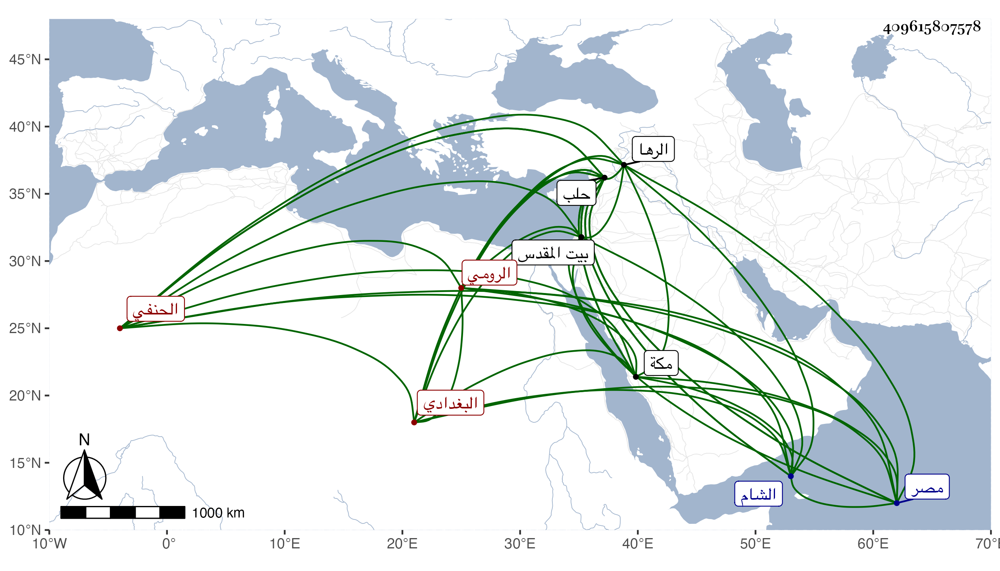

0902Sakhawi.DawLamic.ITO20230111-ara1.EIS1600.409615807578
Biography ID: 409615807578
547
محمود بن بختيار بن عبد الله البغدادي الأصل المرسيفوني الرومي نزيل حلب الحنفي . ولد بمرسيفون من بلاد الروم سنة خمس وخمسين تقريبا ونشأ بها فأخذ بها عن أحمد الجندي في العربية والصرف والمنطق وغيرها من الأدب وسافر لتبريز فأخذ بها عن قاضيها مرتضى في علم الكلام ثم لحلب فقطنها مدة تزيد على عشر سنين وقرأ بها على أبي ذر نصف الصحيح والمصابيح وغيرهما وسمع عليه دروسا في الألفية وأخذ في الفقه عن عبد الرحمن الأرزنجاني وقرأ في التلويح على العلاء على المعروف بقلدرويش الخوارزمي الشافعي ودخل الشام وزار بيت المقدس ودخل مصر صحبة الزين بن العيني وحضر بعض دروس الجوجري وحمزة والمغربي وغيرهما وأقام حتى سافر منها للحج في البحر فقدم مكة في أثناء رمضان سنة أربع وتسعين فأخذ عني بقراءته شرح النخبة بحرا وسمع على قطعة من شرحي على الألفية وجملة وكتبت له إجازة في كراسة واستمر حتى حد ثم عاد ، وهو فاضل مشارك متأدب وبلغني أنه بعد رجوعه تحول إلى الرها فقطنها وصار شيخها .
